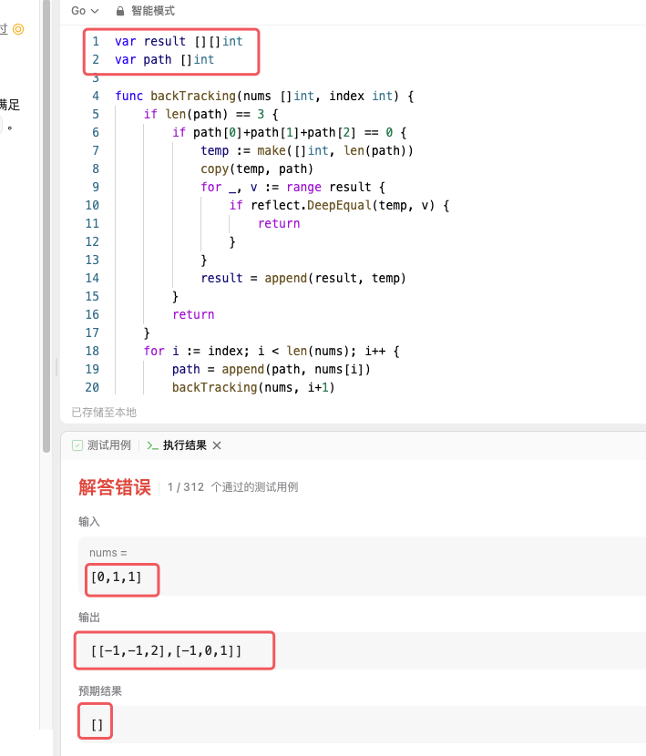

代码随想录算法训练营第七天| 454.四数相加II、383. 赎金信、15. 三数之和、18. 四数之和。 454. 两数相加
题目链接：力扣题目链接
文章讲解：代码随想录(programmercarl.com)
视频讲解：学透哈希表，map使用有技巧！LeetCode：454.四数相加II
状态：TLE
思路 思路一：暴力算法 暴力算法就不用解释了，每个元素都遍历下。定义count记录满足条件情况的个数。满足条件count++就好。不出意外的也肯定会超时。
思路二：使用map 将num4的值存入到map4中的key，值出现的次数存为value。三层循环后接一个判断，判断第四个数是否在map4中，如果存在则总数加value
1 2 3 4 5 6 7 8 9 10 11 12 13 14 15 16 17 func fourSumCount (nums1 []int , nums2 []int , nums3 []int , nums4 []int ) int {0 map [int ]int {}for _, v := range nums4 {for _, i := range nums1 {for _, j := range nums2 {for _, k := range nums3 {if v, ok := map4[0 -i-j-k]; ok {return count
结果你猜超时没有，肯定还是超时了。
思路三：使用四个map 每个map中都存放nums中出现的数以及出现的次数。第一个map定义为map1，键是k1，值是v1，以此类推。
三层循环后判断map4[0-k1-k2-k3]是否存在，如果存在那么count += v1 * v2 * v3 * v4
1 2 3 4 5 6 7 8 9 10 11 12 13 14 15 16 17 18 19 20 21 count := 0 map [int ]int {}map [int ]int {}map [int ]int {}map [int ]int {}for i := 0 ; i < len (nums1); i++ {for k1, v1 := range map1 {for k2, v2 := range map2 {for k3, v3 := range map3 {if v4, ok := map4[0 -k1-k2-k3]; ok {return count
结果你猜超时没有，肯定还是超时了。
原因如下：如果数组中重复的数不多，或者没有，就会退化成思路二。
想了许久，想不出优化的方法了，看了卡哥的题解，我就用我的理解描述一下。
卡哥题解 先计算nums1与nums2和，将两数组所有和的情况保存到mapAB中。key保存的是和，value保存的是和的个数。
再计算nums3与nums4和，判断mapAB[0-k3-k4]是否存在，若存在count+=mapAB[0-k3-k4]
1 2 3 4 5 6 7 8 9 10 11 12 13 14 15 16 17 func fourSumCount (nums1 []int , nums2 []int , nums3 []int , nums4 []int ) int {0 map [int ]int {}for _, v1 := range nums1 {for _, v2 := range nums2 {for _, v3 := range nums3 {for _, v4 := range nums4 {if v, ok := mapAB[0 -v3-v4]; ok {return count
383. 赎金信 思路 要判断ransomNote是否含于magazine，先构建一个数组，存放magazine的情况，索引代表字母：0代表'a'，1代表'b'等等；值代表字母出现的次数。构建好后再遍历ransomNote串，将对应的字母数量减少一，如果不存在直接return false
代码 1 2 3 4 5 6 7 8 9 10 11 12 13 14 15 16 func canConstruct (ransomNote string , magazine string ) bool {if len (ransomNote) > len (magazine) {return false make ([]int , 26 )for _, v := range magazine {'a' ]++for _, v := range ransomNote {'a' ]--if arr[v-'a' ] < 0 {return false return true
15. 三数之和
题目链接：力扣题目链接
文章讲解：代码随想录(programmercarl.com)
视频讲解：梦破碎的地方！| LeetCode：15.三数之和
状态：TLE
思路 我投降了这道题，Go的底层现在有一个新的理解！
方法一：回溯算法 首先先将nums排序，利用回溯算法得到所有的组合，选择排序的原因是因为这样得到的组合，即使是重复的也可以保证顺序一致，方便判断这个组合是否出现过。最终结果保存到变量result，得到的可能得组合保存到变量path
代码 1 2 3 4 5 6 7 8 9 10 11 12 13 14 15 16 17 18 19 20 21 22 23 24 25 26 27 28 29 30 func backTracking (nums []int , index int , result *[][]int , path *[]int ) if len (*path) == 3 {if (*path)[0 ]+(*path)[1 ]+(*path)[2 ] == 0 {make ([]int , len (*path)) copy (temp, *path)for _, v := range *result {if reflect.DeepEqual(temp, v) { return append (*result, temp)return for i := index; i < len (nums); i++ {append (*path, nums[i])1 , result, path)len (*path)-1 ]func threeSum (nums []int ) int {var result [][]int var path []int 0 , &result, &path)return result
结果你猜超时没有，肯定还是超时了。
这里我遇到了好多问题，首先是发现了result = append(result, temp)，这里append方法实际上是浅拷贝！也就是说以后temp的值，result也会变化。这也是我为什么用一个临时变量temp来保存path，而且使用的是copy()。
要判断temp是否存在于result中，那么则需要使用反射，进行深度判断reflect.DeepEqual(temp, v)。
遇到最头大的问题！！！！！！ 以前用别的语言写回溯，很自然的使用了全局变量，结果在Go语言中发生了奇妙的事情。请看截图

明明输入的只有0和1，怎么会输出了2。而且这个测试用例这么眼熟呢，没错这就是给出的测试用例Case1的答案。放到Goland里面明明是正确答案！到这里就变了，说明全局变量出现了问题。解决这个问题有两个想法：
查找有没有类似C++中的delete，使用完变量之后释放掉。发现并没有。而且使用完变量应该在threeSum()之外了，函数内释放就没有结果了。
threeSum()定义变量，使用指针传值。
当然，第二种才是正解。改完之后就是上面放出来的代码了，超时。
方法二：使用哈希 将nums进行排序，并哈希处理，定义变量map1用作哈希表，nums中的每个元素做key，value则是每个元素出现的次数。
使用两层for循环之后，判断0-nums[i]-nums[j]是否存在。若存在还需要判断每个数字出现的次数是否合法（例如nums = [-1,0,1,2,-1,-4]，如果找到一个组合是[2, -4, 2]则需要舍弃。之所以会出现这样，是因为两层for会找到2和-4，而0-nums[i]-nums[j]会找到重复的2）
找到组合之后，对组合再排序，判断path是否在result中。
1 2 3 4 5 6 7 8 9 10 11 12 13 14 15 16 17 18 19 20 21 22 23 24 25 26 27 28 29 30 31 32 33 34 35 36 func threeSum (nums []int ) int {map [int ]int {}for _, v := range nums {var result [][]int for i := 0 ; i < len (nums); i++ {for j := i + 1 ; j < len (nums); j++ {if v, ok := map1[-nums[i]-nums[j]]; ok {int {nums[i], nums[j], -nums[i] - nums[j]}0 if nums[i] == nums[j] || nums[j] == -nums[i]-nums[j] || nums[i] == -nums[i]-nums[j] {2 if nums[i] == nums[j] && nums[j] == -nums[i]-nums[j] {3 if v >= count {true for _, value := range result {if reflect.DeepEqual(value, temp) {false if flag {append (result, temp)return result
结果你猜超时没有，肯定还是超时了。
好了，我投降了，想不到好方法了。去看卡哥视频了。
卡哥解法 这道题不适合用哈希表做 。双指针我想了一下也没有太想明白，主要还是去重操作。看了视频讲解很清楚了
数组排序，方便后序操作
先找第一个数，使用一层for，指针为i
找第二个、第三个数。分别用指针left = i + 1，right = len(nums) - 1
剪枝：如果i>0，那么直接return，说明后续不可能再有等于0的三元组了
判断nums[i] + nums[left] + nums[right]和0的情况
nums[i] + nums[left] + nums[right] > 0 right--nums[i] + nums[left] + nums[right] < 0 left++nums[i] + nums[left] + nums[right] == 0
这个三元组放入到结果中，但是仍然要相向前进。对于left，如果如果一致前进得到的nums[left]==nums[left+1]，说明该三元组已经存在过了（0, -1, -1, 1 ,1）。right同理，nums[right] == nums[right - 1]
找到各自不同的数nums[left+1]和nums[right-1]，再前进一个（0, -1, -1, -2, 2, 1, 1）
return result
代码 1 2 3 4 5 6 7 8 9 10 11 12 13 14 15 16 17 18 19 20 21 22 23 24 25 26 27 28 29 30 31 32 func threeSum (nums []int ) int {int {}for i := 0 ; i < len (nums); i++ {if nums[i] > 0 {return resultif i > 0 && nums[i] == nums[i-1 ] {continue 1 len (nums) - 1 for left < right {if nums[i]+nums[left]+nums[right] > 0 {else if nums[i]+nums[left]+nums[right] < 0 {else {append (result, []int {nums[i], nums[left], nums[right]})for left < right && nums[left] == nums[left+1 ] {for left < right && nums[right] == nums[right-1 ] {return result
虽然这个代码AC了，但是毫无成就感。现在是9月27日凌晨2:53，还有一道题。继续
18. 四数之和
题目链接：力扣题目链接
文章讲解：代码随想录(programmercarl.com)
视频讲解：难在去重和剪枝！| LeetCode：18. 四数之和
状态：AC
算法 算法同上题，只不过这次要先确定两个数，然后用left和right指针找第三个第四个数。有几点不同：
这里不是与0作比较，而是target，不可以nums[i] > target之后就break，因为如果有一堆负数相加一定出现越加越小，使得等于target
数组长度可能小于4，需要额外判断
剪枝i>0开始，j>i+1开始，j永远在i后一位
领悟了上一道题，这一题不难了
代码 1 2 3 4 5 6 7 8 9 10 11 12 13 14 15 16 17 18 19 20 21 22 23 24 25 26 27 28 29 30 31 32 33 34 35 36 37 func fourSum (nums []int , target int ) int {var result [][]int if len (nums) < 4 {return resultfor i := 0 ; i < len (nums)-3 ; i++ {if i > 0 && nums[i] == nums[i-1 ] {continue for j := i + 1 ; j < len (nums)-2 ; j++ {if j > i+1 && nums[j] == nums[j-1 ] {continue 1 len (nums) - 1 for left < right {if nums[i]+nums[j]+nums[left]+nums[right] < target {else if nums[i]+nums[j]+nums[left]+nums[right] > target {else {append (result, []int {nums[i], nums[j], nums[left], nums[right]})for left < right && nums[left] == nums[left+1 ] {for left < right && nums[right] == nums[right-1 ] {return result
小结
Go的底层有了很多认识，是以前做题或者写项目时候意识不到的。尤其是浅拷贝与深拷贝，大概找到规律了，几乎都是浅拷贝，如果想要深拷贝一定要用copy()
由于Go的特性，Go的全局变量不可以在leetcode使用，需要指针传值
晚安，准备睡觉了，3:20了，一觉起来是新的题，字符串要学KMP算法什么的了。